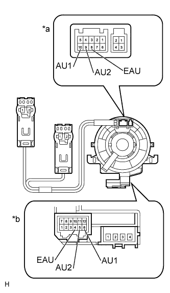

NAVIGATION SYSTEM (for DVD) > Steering Pad Switch Circuit |
| 1.INSPECT STEERING PAD SWITCH ASSEMBLY |
Remove the steering pad switch assembly (Click here).
| *1 | Volume+ Switch | *2 | Volume- Switch |
| *3 | Seek- Switch | *4 | Seek+ Switch |
| *5 | Mode Switch | *6 | Off Hook Switch |
| *7 | On Hook Switch | *8 | Voice Switch |
Measure the resistance according to the value(s) in the table below.
| Tester Connection | Switch Condition | Specified Condition |
| 10 (AU1) - 8 (EAU) | No switch is pushed | 95 to 105 kΩ |
| Seek+ switch is pushed | Below 2.5 Ω | |
| Seek- switch is pushed | 313 to 345 Ω | |
| Volume+ switch is pushed | 950 to 1050 Ω | |
| Volume- switch is pushed | 2955 to 3265 Ω | |
| 9 (AU2) - 8 (EAU) | No switch is pushed | 95 to 105 kΩ |
| MODE switch is pushed | Below 2.5 Ω | |
| On hook switch is pushed | 313 to 345 Ω | |
| Off hook switch is pushed | 950 to 1050 Ω | |
| Voice switch is pushed | 2955 to 3265 Ω |
|
| ||||
| OK | |
| 2.INSPECT SPIRAL WITH SENSOR CABLE SUB-ASSEMBLY |
|  |
Remove the spiral with sensor cable sub-assembly (Click here).
Measure the resistance according to the value(s) in the table below.
| Tester Connection | Condition | Specified Condition |
| 8 (EAU) - 4 (EAU) | Spiral with sensor cable is turned 2.5 rotations counterclockwise | Below 1 Ω |
| Spiral with sensor cable is centered | ||
| Spiral with sensor cable is turned 2.5 rotations clockwise | ||
| 10 (AU1) - 6 (AU1) | Spiral with sensor cable is turned 2.5 rotations counterclockwise | |
| Spiral with sensor cable is centered | ||
| Spiral with sensor cable is turned 2.5 rotations clockwise | ||
| 9 (AU2) - 5 (AU2) | Spiral with sensor cable is turned 2.5 rotations counterclockwise | |
| Spiral with sensor cable is centered | ||
| Spiral with sensor cable is turned 2.5 rotations clockwise |
| *a | Steering Pad Switch Assembly Side |
| *b | Vehicle Side |
|
| ||||
| OK | |
| 3.CHECK HARNESS AND CONNECTOR (DISPLAY AND NAVIGATION MODULE DISPLAY - SPIRAL WITH SENSOR CABLE) |
Disconnect the H4 display and navigation module display connector.
Disconnect the G28 spiral with sensor cable connector.
Measure the resistance according to the value(s) in the table below.
| Tester Connection | Condition | Specified Condition |
| H4-25 (SW1) - G28-6 (AU1) | Always | Below 1 Ω |
| H4-24 (SW2) - G28-5 (AU2) | Always | Below 1 Ω |
| H4-23 (SWG) - G28-4 (EAU) | Always | Below 1 Ω |
| H4-25 (SW1) - Body ground | Always | 10 kΩ or higher |
| H4-24 (SW2) - Body ground | Always | 10 kΩ or higher |
| H4-23 (SWG) - Body ground | Always | 10 kΩ or higher |
|
| ||||
| OK | ||
| ||